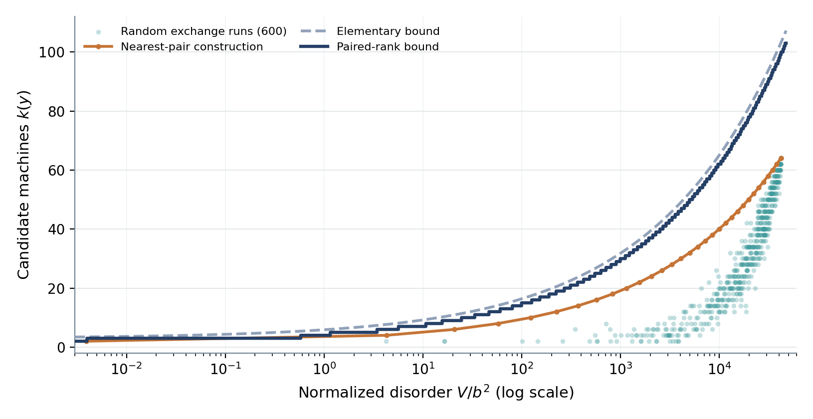

Abstract. Consider \(m\) machines holding \(b\) distinct keys each. They sort locally and answer membership queries without necessarily merging their runs. How many machines can a query require when the concatenated data have bounded squared rank-displacement potential? We bound the number of overlapping machine ranges by a cube root of that potential, sharpen the finite bound by pairing distinct crossing ranks with physical positions, and construct instances showing that the exponent is necessary. The elementary cube root comes directly from the identity for a sum of squares. We then remove disorder due only to whole-block relocation: minimizing potential over block orders preserves overlap and yields a stronger, order-invariant guarantee with a simple optimal ordering rule. An exact coarse/fine decomposition, comparison and communication accounting, and a simulation connect the structural bounds to a choice between range routing and a global merge. The interval directory and deferred merge are established techniques; the potential-to-overlap results are working claims without a publication-priority assertion.
Why this problem?
Suppose records are spread over machines, and a service must answer questions of the form “does key \(y\) occur, and where?” A machine can sort its own records, but a global sorted index would require further cross-machine work. If queries are few, it may be better to keep the sorted runs separate and route each query to plausible machines. If many machine ranges overlap at \(y\), however, this plan can degenerate into searching nearly every machine.
The question is whether a numerical bound on disorder predicts that overlap. There is an immediate complication: a permutation of whole, internally sorted machines can be very disordered in physical order while their value ranges remain disjoint. We first prove a general guarantee, then remove this harmless source of potential by optimizing the whole-block order. We borrow a coarse-graining viewpoint from renormalization-group (RG) vocabulary: retain the machine-scale features relevant to routing while suppressing individual key positions. This is an interpretation, not an RG-based optimization theorem. Sorted runs and deferred organization are known [2]; interval stabbing is a standard reporting problem [3]. The proposed connection is from rank displacement to the number of machine ranges a point can stab.
This note connects to the disorder-potential search program [1], which studies a single search and the cost of preprocessing many searches. Its numerical potential promise must be supplied or certified. Here the machine partition is fixed and equal-sized, all comparisons are charged, and communication is called out separately. We do not assume a free global rank oracle in the algorithm.
Model and exact decompositions
Let \(n=mb\), with \(m\ge1\) and \(b\ge2\). The \(n\) keys are distinct and totally ordered. In physical machine order, write \(A=(A_1,\ldots,A_n)\); let \(x_i\in\{1,\ldots,n\}\) be the global rank of \(A_i\). The potential is \[\tag{1} V(A)=\frac12\sum_{i=1}^{n}(x_i-i)^2.\] The instance comes with a bound \(V(A)\le E\), either as an explicit promise or as a certificate whose verification cost must be counted. Our data structure never computes \(V\) or the global ranks. Since swapping an adjacent inverted pair of ranks \(u>v\) decreases \(V\) by exactly \(u-v\), sorting each block locally cannot increase the potential; it also preserves that block’s minimum and maximum.
The easiest case has an exact two-level description. Suppose each physical block contains a complete, contiguous interval of \(b\) global ranks. Let \(\pi(j)\) be the rank interval held at physical block \(j\); then \(\pi\) is a permutation of \(\{1,\ldots,m\}\). If \(r_{j,t}\) is the local rank of the key at position \(t\) inside block \(j\), define \(E_j=\frac12\sum_{t=1}^{b}(r_{j,t}-t)^2\). Then:
Proposition 1 (Whole-block identity). Under the contiguous-rank-interval assumption, \[\tag{2} V(A)=\sum_{j=1}^{m}E_j+b^3V(\pi),\qquad V(\pi)=\frac12\sum_{j=1}^{m}(\pi(j)-j)^2.\]
Proof. At position \((j-1)b+t\), the displacement is \(b(\pi(j)-j)+(r_{j,t}-t)\). Square and sum within block \(j\). The cross term vanishes because \(\sum_t(r_{j,t}-t)=0\) for a local permutation. The remaining terms are \(E_j\) and \(b^3(\pi(j)-j)^2/2\). ◻
Interleaved ranges need not admit any \(\pi\). There is nevertheless an exact decomposition that keeps the coarse/fine analogy honest. Put \[x_{j,t}=x_{(j-1)b+t},\quad \mu_j=\frac1b\sum_{t=1}^{b}x_{j,t},\quad c_j=(j-1)b+\frac{b+1}{2},\quad z_t=t-\frac{b+1}{2}.\]
Proposition 2 (Block-mean decomposition). For arbitrary interleaving, \[\tag{3} V(A)=\underbrace{\frac b2\sum_{j=1}^{m}(\mu_j-c_j)^2}_{V_{\mathrm{coarse}}} +\underbrace{\frac12\sum_{j=1}^{m}\sum_{t=1}^{b} \bigl[(x_{j,t}-\mu_j)-z_t\bigr]^2}_{V_{\mathrm{residual}}}.\] In the contiguous-rank case, this is exactly (2).
Proof. The displacement at \((j-1)b+t\) equals \((\mu_j-c_j)+[(x_{j,t}-\mu_j)-z_t]\). The bracketed residuals sum to zero within block \(j\), so their cross term with \(\mu_j-c_j\) vanishes. In the restricted case, \(\mu_j-c_j=b(\pi(j)-j)\) and the residual is \(r_{j,t}-t\). ◻
The means \(\mu_j\) require global ranks and are analytical coordinates, not free directory fields. Moreover, local sorting does not generally make \(V_{\mathrm{residual}}\) vanish: an internally sorted block may contain interleaved global ranks. For routing, the observable coarse state will instead be the family of value intervals.
The interval router and what it costs
Each machine sorts its \(b\) keys and can retain an original-position tag with every key. Define its closed value range \(I_j=[\min A_j,\max A_j]\). Build a static centered interval tree over \(I_1,\ldots,I_m\). For a query \(y\), report all \(k(y)=|\{j:y\in I_j\}|\) matching ranges and binary-search those machines. A range that excludes \(y\) cannot contain the key; therefore the algorithm is exact. It returns a machine and local position for a present key and reports absence after exhausting the candidates.
In the comparison model, a suitable static interval tree uses \(O(m\log m)\) directory-building comparisons, \(O(m)\) extra words, and \(O(\log m+k)\) comparisons to report \(k\) intervals. Local sorting takes \(O(mb\log b)\) comparisons in total; searching each candidate takes \(O(\log b)\). Thus one query costs \[\tag{4} C(y)=O\bigl(\log m+k(y)\log b\bigr),\] and \(q\) queries cost \[\tag{5} O\left(mb\log b+m\log m+q\log m+\log b\sum_{a=1}^{q}k(y_a)\right).\] This is a total comparison count. If local sorts run concurrently, their wall time differs; contacting \(k\) machines also incurs communication and latency, which (4) does not hide. A full merge of the local runs is a valid alternative baseline with its own charged construction cost, often \(O(mb\log m)\) comparisons after local sorting and \(O(\log(mb))\) per membership query. The best choice depends on query volume and machine costs.
Potential limits interval overlap
Fix an absent target \(y\) and put \(r=|\{a\in A:a<y\}|\). The rank cut is the gap between ranks \(r\) and \(r+1\). Call a candidate block left if all its physical positions are at most \(r\), and right if all its positions exceed \(r\). There are \(L\) and \(R\) such candidates; at most one physical block straddles position \(r\). Every candidate range containing an absent \(y\) contains both a key below and a key above \(y\). A left candidate therefore holds a key of rank \(>r\), and a right candidate holds one of rank \(\le r\).
Theorem 3 (Elementary cubic bound). If \(V(A)\le E\), then for every absent \(y\), \[\tag{6} k(y)\le 3+\left(\frac{24E}{b^2}\right)^{1/3}.\] For a present \(y\), the right side increases by at most one.
Proof. Number left candidate blocks from nearest the physical cut outwards. Select one key above rank \(r\) from each. These keys occupy distinct blocks and have displacement at least \(1,b+1,\ldots,(L-1)b+1\). On the right, one low-rank key per candidate has analogous displacements. Consequently \[\tag{7} 2E\ge b^2\left(\sum_{t=0}^{L-1}t^2+\sum_{t=0}^{R-1}t^2\right).\] Using \(\sum_{t=0}^{q-1}t^2\ge(q-1)_+^3/3\), \(a^3+c^3\ge(a+c)^3/4\) for \(a,c\ge0\), and \((L-1)_++(R-1)_+\ge(k-3)_+\) gives \(E\ge b^2(k-3)_+^3/24\). For a present key, use the gap immediately before it: all candidate ranges except possibly its own also contain that gap. ◻
This says that an absent query cannot be routed to many machines without paying cubic displacement energy. The coefficient is conservative: (7) treats several crossing keys as if each could use the same closest available rank. They cannot. The next theorem uses their distinct ranks.
Why a cube root?
The elementary identity \[\tag{8} \sum_{t=0}^{q-1}t^2=\frac{(q-1)q(2q-1)}6=\frac{q^3}{3}+O(q^2)\] is the source of the exponent. As candidate blocks extend away from the rank cut, their required key displacements grow in steps of about \(b\). Squaring each displacement and adding across \(q\) blocks costs order \(b^2q^3\). Inverting \(E\gtrsim b^2q^3\) gives \(q\lesssim(E/b^2)^{1/3}\). The proof above accounts for both sides of the cut and the possible block that straddles it; those details produce the additive \(3\) and the safe constant \(24\). The cube root is a property of cumulative squared costs, not of RG terminology.
A universal paired-crossing refinement
For integers \(q\ge0\), define \[\tag{9} F_b(q)=\sum_{t=0}^{q-1}\bigl[q+(b-1)t\bigr]^2 =q^3+(b-1)q^2(q-1)+\frac{(b-1)^2q(q-1)(2q-1)}6.\] Take \(F_b(0)=0\). The physical cut can lie inside one block. We keep the possible straddler separate rather than assuming the cut happens to align with a machine boundary.
Theorem 4 (Distinct crossing ranks). For every absent \(y\) with \(L\) left and \(R\) right candidate blocks, \[\tag{10} 2E\ge F_b(L)+F_b(R).\] In terms of \(k=k(y)\) alone, set \(s=(k-1)_+\). Then \[\tag{11} E\ge \frac12\left[F_b\!\left(\left\lfloor\frac{s}{2}\right\rfloor\right) +F_b\!\left(\left\lceil\frac{s}{2}\right\rceil\right)\right].\] If \(r\) is a physical block boundary, replace \(s\) by \(k\). The same formulas apply with \(E\) replaced by the actual \(V(A)\).
Proof. Choose one above-cut key from each left candidate, and list their physical positions from nearest the cut to farthest as \(p_0>\cdots>p_{L-1}\). Since the selected blocks are distinct and have width \(b\), \(p_t\le r-tb\). Their ranks are \(L\) distinct integers above \(r\). Among all possible assignments, the sum of squared displacements is smallest if we use the \(L\) closest above-cut ranks and match positions and ranks in the same sorted order (the rearrangement inequality for squared distance). The nearest physical position then receives rank at least \(r+L\), the next at least \(r+L-1\), and so on. The selected left keys therefore contribute at least \(F_b(L)\) to \(2V(A)\). Applying the symmetric argument to \(R\) right candidates gives \(F_b(R)\); all selected keys are distinct. This proves (10).
At most one candidate block straddles the physical cut, so \(L+R\ge s\). The function \(F_b\) is increasing and discretely convex for \(b\ge2\). Its sum at a fixed \(L+R\) is minimized when \(L\) and \(R\) differ by at most one, giving (11). At a block boundary there is no straddling block and \(L+R=k\). ◻
The refinement is explicit and integer-valued. For fixed \(b\) and growing \(q\), \[\tag{12} F_b(q)=\frac{b^2+b+1}{3}q^3+O(b^2q^2).\] Thus the universal bound retains the cube-root exponent while improving the finite-instance threshold and the leading constant of this particular lower bound. It does not establish the exact minimum possible \(E\) for a given \(k\). When \(y\) is present, delete its unique containing block from the count and apply the absent-gap reasoning; this gives a valid bound with at most one additional candidate.
How tight, and what the simulation shows
The cubic exponent is unavoidable. Start with \(2h\) sorted blocks of size \(b\). For \(t=0,\ldots,h-1\), swap the last key of the left block ending at position \((h-t)b\) with the first key of the right block beginning at position \((h+t)b+1\). The blocks remain internally sorted. For the absent central query \(y=hb+\tfrac12\), every one of the \(2h\) block ranges contains \(y\), while \[\tag{13} k(y)=2h,\qquad V(A)=\sum_{t=0}^{h-1}(2tb+1)^2=\Theta(b^2h^3).\] Hence no bound depending only on \(E,b\) can replace the cube root by a smaller exponent. This family is a witness to scaling, not to an optimal constant. For \(b=2\) and four blocks, nearest-pair swaps give \(k=4\) and \(V=26\), whereas \[[1,5]\mid[2,6]\mid[3,7]\mid[4,8]\] also has four ranges containing \(y=4.5\) but only \(V=14\). The aligned-cut paired bound gives \(E\ge F_2(2)=13\); the second configuration comes close without proving attainability of \(13\).

The plot separates three claims. Both lines are worst-case ceilings under their respective proven inequalities. The orange construction tracks the necessary exponent. The random exchange runs tend to visit fewer machines at a fixed energy because distant exchanges spend disorder without introducing many new candidate ranges. In the generated sample all 600 observations satisfy both bounds; exhaustive small-instance checks are useful verification but do not replace the proofs.
A worked cut.
Consider \(128\) machines of \(16\) keys and apply the nearest-pair construction with \(h=4\) at the central gap. Exactly eight machine ranges meet the absent target. The potential is \[E=1^2+33^2+65^2+97^2=14{,}724.\] The elementary bound (6) allows at most \(14\) candidates after taking the integer part. The paired inequality (11) allows at most \(12\) without using the cut position, and at most \(11\) with the known fact that this cut lies between two blocks. The actual count is eight. These numbers illustrate a rigorous reduction of the worst-case ceiling, not a guarantee that a query will use all allowed candidates. In a distributed implementation, eight candidate blocks still mean up to eight machine contacts. The choice between this routing method and a globally merged index therefore depends on network latency as well as comparison count.
Removing harmless block relocation
A large \(V\) does not force substantial overlap. Sort each block internally, but reverse the order of the \(m\) complete rank intervals across physical machines. Their value ranges remain disjoint, so any target lies in at most one range. Yet (2) gives \[V(A)=b^3V(\pi)=\frac{b^3m(m^2-1)}6\] for the reversal permutation \(\pi(j)=m+1-j\). This potential measures displacement relative to an arbitrary order of machines that the range directory need not respect.
Let \(r_{j,1}<\cdots<r_{j,b}\) be the global ranks in block \(j\) after local sorting. For a block permutation \(\sigma\), place block \(j\) in slot \(\sigma(j)\), and define the order-invariant mixing potential \[\tag{14} E_{\rm mix}=\min_{\sigma\in S_m}\frac12\sum_{j=1}^{m}\sum_{t=1}^{b} \bigl[r_{j,t}-((\sigma(j)-1)b+t)\bigr]^2.\] This operation changes only physical block order: the set of block ranges and \(k(y)\) remain exactly the same. The global ranks in (14) are analytical information, not free fields of the router.
Theorem 5 (Order-invariant overlap certificate). Write \(\mu_j=b^{-1}\sum_t r_{j,t}\), \(z_t=t-(b+1)/2\), \(c_s=(s-1)b+(b+1)/2\), and let \(\mu_{(1)}\le\cdots\le\mu_{(m)}\) be the sorted block means. Then \[\tag{15} E_{\rm mix}=\frac12\sum_{j,t}\bigl[(r_{j,t}-\mu_j)-z_t\bigr]^2 +\frac b2\sum_{s=1}^{m}(\mu_{(s)}-c_s)^2.\] In particular, sorting whole blocks by mean global rank minimizes potential. For every absent target \(y\), \[\tag{16} k(y)\le 3+\left(\frac{24E_{\rm mix}}{b^2}\right)^{1/3}.\] The paired-crossing bound (11) also holds with \(E_{\rm mix}\) in place of \(E\).
Proof. Apply the block-mean decomposition (3) after local sorting and block permutation. The first sum in (15) is independent of \(\sigma\). For any two block means \(u\le v\) and positions \(c_s\le c_t\), matching them in the same order costs no more than crossing them: the crossed cost minus the ordered cost is \(b(v-u)(c_t-c_s)\ge0\). Repeated uncrossing proves (15). Reordering blocks preserves every value interval and hence \(k(y)\). Apply Theorem 3 and then Theorem 4 to a minimizing order. The count-only paired inequality is independent of where the candidate blocks lie in that order. ◻
Since local sorting cannot increase \(V\), \(E_{\rm mix}\le V(A)\). It is zero for any permutation of complete, internally sorted rank blocks, including the reversal above. It can still include displacement irrelevant to a particular query; a cut-specific energy might give a sharper local certificate. For fixed \(b\) and growing \(h\), the construction in (13) has \(E_{\rm mix}=\Theta(b^2k^3)\): Theorem 5 gives the lower scaling, while the construction’s original potential gives an upper bound on the minimum. Thus removing whole-block relocation improves the budget without changing the universal cube-root exponent.
When the certificate changes a decision
The router’s comparison cost for \(q\) queries is (5), while a full merge after local sorting costs roughly \(O(mb\log m)\) comparisons up front and \(O(\log(mb))\) per query. With an externally supplied or certified \(E_{\rm mix}\), (16) gives a pre-query upper bound on candidate-machine contacts; for present keys allow one extra candidate. This can justify keeping the runs separate when a merger would not be repaid by the anticipated queries. It does not mean the router has computed global ranks.
After local sorting, each machine can report its minimum and maximum. Their range directory reports the actual \(k(y)\), and a sweep of endpoints can find the maximum overlap without global ranks. For a workload, measured average overlap and machine latency are more useful than a conservative potential ceiling. In a calibrated model, let \(C_R\) be the measured cost of a routed query, \(C_M\) the cost of a query after merging, \(C_{\rm merge}\) the remaining merge cost, and \(q_{\rm rem}\) the expected number of remaining queries. Merge when \[\tag{17} q_{\rm rem}(C_R-C_M)>C_{\rm merge},\qquad C_R>C_M,\] with communication included in the respective measured query costs. If the range directory has not yet been built, add its construction cost to the router side. The inequality is an engineering rule under a workload estimate, not an asymptotic theorem. Computing the exact \(E_{\rm mix}\) from raw keys requires global rank information and may cost more than the decision is worth. The bound is most useful when its budget is a meaningful upstream promise or certificate.
Interpretation and open questions
The mean/residual identity (3) separates block-scale displacement from within-block structure. The router uses a different coarse state, the block extrema. Theorems 3, 4, and 5 connect these descriptions by limiting overlap from rank displacement, even after harmless block relocations are removed. This is a coarse-graining analogy, not an iterative renormalization flow. Interval trees, deferred organization, and processing separate sorted runs are established [3] [2] [4]; the potential-to-overlap certificates are the proposed working results. We have not established publication novelty, an exact extremal constant, or optimality of the full preprocessing/query trade-off.
Next questions are (i) find the exact minimum \(E_{\rm mix}\) for a specified overlap profile and cut, perhaps with a query-specific certificate; (ii) allow unequal block sizes and repeated keys with a careful tie convention; (iii) measure the communication and break-even costs against a global merge; and (iv) seek a genuinely multilevel directory whose potential guarantee composes across levels. Any advertised potential promise must account for how it was obtained.
References
- J. R. Landers, Disorder Potential and the Cost of Search and Search Under a Disorder Budget, project manuscripts and repository, 2026. https://github.com/jonland82/algorithmic-search-cost.
- J. Barbay, C. Ochoa, and S. R. Satti, “Synergistic Sorting, MultiSelection and Deferred Data Structures on MultiSets,” arXiv:1608.06666, 2016. https://arxiv.org/abs/1608.06666.
- W. Akram and S. Saxena, “Top-k Stabbing Interval Queries,” arXiv:2411.03037, 2024. https://arxiv.org/abs/2411.03037.
- M.-C. Albutiu, A. Kemper, and T. Neumann, “Massively Parallel Sort-Merge Joins in Main Memory Multi-Core Database Systems,” arXiv:1207.0145, 2012. https://arxiv.org/abs/1207.0145.